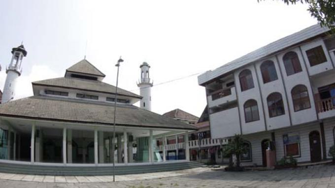
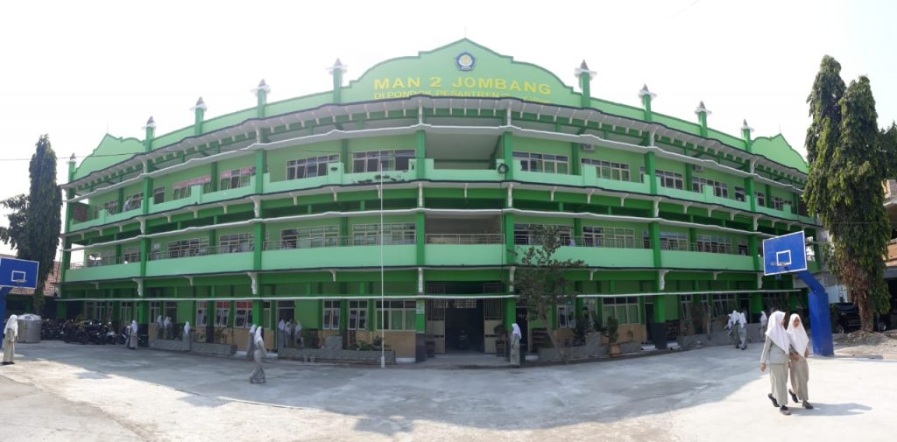
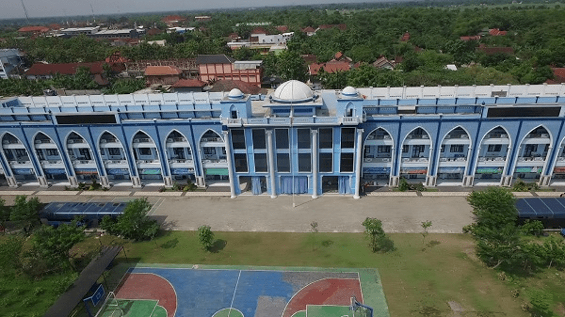
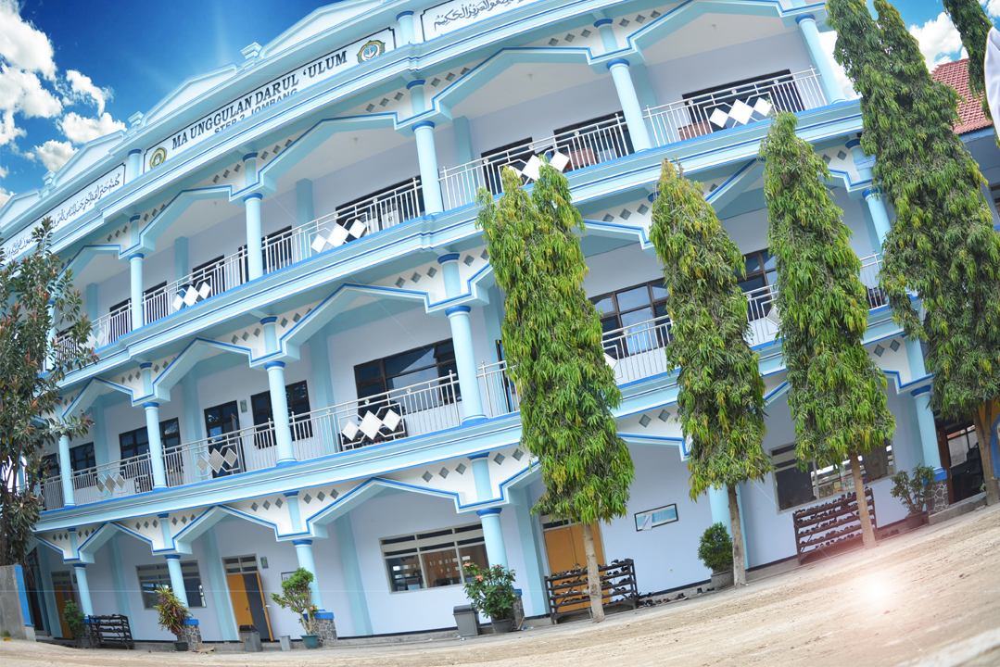

Sejarah

Pondok Pesantren Darul ‘Ulum didirikan oleh Kyai Haji Tamim Irsyad dibantu Kyai Haji Cholil sebagai mitra kerja dan sekaligus menantunya pada tahun 1885 M. Pondok Pesantren ini didirikan bermula dari kedatangan Kyai Haji Tamim Irsyad dari Bangkalan, Madura ke Desa Rejoso. Dia adalah murid Kyai Haji Cholil Bangkalan.
Pondok Pesantren Darul ‘Ulum merupakan suatu badan pendidikan islam dengan deretan gedung yang berdiri kokoh dihamparan tanah seluas kurang lebih 42,5 hektare dan berlokasi di desa Rejoso, kecamatan Peterongan, Jombang.
Seiring dengan perjalanan waktu, santri yang berdatangan menimba ilmu semakin banyak dan beragam. Kenyataan tersebut telah mendorong Pondok Pesantren Darul ‘Ulum (Rejoso) beberapa kali telah melakukan perubahan kebijakan yang berkaitan dengan pendidikan.
Sebagaimana pesantren-pesantren pada zaman pendiriannya, sistem pengajaran awal yang digunakan adalah metode sorogan (santri membaca sendiri materi pelajaran kitab kuning di hadapan guru), serta metode weton atau bandongan atau halqah (kyai membaca kitab dan santri memberi makna).
Asas dan Tujuan

Asas
Asas kelembagaan Darul ‘Ulum sebagai wadah pendidikan kader bangsa, negara, dan agama adalah Pancasila dan Undang-Undang Dasar 1945.
Dasar
Dasar amaliyah Darul ‘ulum sebagai lembaga sosialisasi nilai agama adalah ahli sunnah wal jamaah. Dengan petunjuk konstruktif melalui empat madzab yaitu Maliki, Syafii, Hambali, dan Hanafi.
Tujuan
- Membentuk kader muslim yang sejati. Aktif dalam menjalankan ajaran Islam dan konsekuen terhadap kesaksiannya
- Menempatkan ilmu pengetahuan sebagai penegak agama dan negara. Seperti semboyan Pondok Pesantren Darul ‘Ulum :
وَأُولُوا الْعِلْمِ قَآئِمًۢا بِالْقِسْطِ
Maksudnya:
Orang-orang yang mempunyai ilmu pengetahuan selalu tegak dalam sikapnya.
- Membentuk manusia-manusia yang akrab dan selalu mencintai Allah SWT. Lewat kesadaran bahwa hanya petunjuk-nya yang akan sanggup menciptakan kebaikan.
Seperti sabda Rasulullah SAW:
مَنِ ازْدَادَ عِلمًا وَلَمْ يَزْدَدْ هُدىً لَمْ يَزْدَدْ مِنَ اللهِ إِلّا بُعْدًا
Maksudnya:
Barang siapa bertambah Ilmunya dan tidak bertambah petunjuk Allah SWT, maka akan menjatuhkan dari kedamaian.
Bentuk-Bentuk Pendidikan

Pendidikan Pesantren Formal
Pondok Pesantren Darul Ulum (PPDU) adalah sekolah yang memiliki unit pendidikan terlengkap di Indonesia. Dari Jenjang Madrasah Ibtidaiyah/Sekolah Dasar hingga Perguruan Tinggi. Berikut daftar unit pendidikan yang ada di PPDU:
- Madrasah Ibtidaiyah Negeri (MIN) Rejoso
- Madrasah Tsanawiyah (MTs) Plus Darul Ulum
- Madrasah Tsanawiyah Negeri (MTs-N) Rejoso di PP. Darul Ulum
- SMP Darul Ulum 1 Unggulan
- SMP Negeri 3 Peterongan di di PP. Darul Ulum
- MAN Darul Ulum
- MA Unggulan Darul Ulum
- SMA 1 Darul Ulum unggulan BPPT
- SMA Darul Ulum 2 Unggulan BPPT
- SMA Darul Ulum 3 Unggulan Bilingual Jombang
- SMK 1 Darul Ulum
- SMK Telkom Darul Ulum
- UNIPPDU (Universitas Pesantren Tinggi Darul Ulum)
- UNDAR (Universitas Darul Ulum)
Pendidikan Pesantren Non Formal
Pengajian Kitab – kitab meliputi :
- Tafsir
Tafsir Jalalain, Ibnu Katsir, Qurtubi dan Tafsir
- Hadits
Buchori Muslim, Tajridusshoreh, Bulugul Maram, Riyadus Sholihin, Jawahirul Buchori, Arbain Nawawi
- Alat
Jurumiyah, Imriti, Alfiah Ibnu Malik, Milhatul I’rob dan Qowaidul Lughoh
- Fiqih
Mabadi’ Fiqiyyah, Safinatun Najah, Sulam Taufiq, Fathul Qorib, Fathul Mu’in, Kifayatul Akhyar
- Akhlaq
Akhlaqul Banat, Akhlaqul banin, Uqudul Jain, Ta’lim Muta’lim, Durotunnasihin, Bidayatul Hidayah, Nashoihul Ibad,Khikam, dan Ihya Ulumuddin
- Lain – Lain
Kitab – kitab yang dikaji khusus oleh Kyai dan santri senior.
Pengajian Al Qur’an
- Dengan hafalan :
Dikaji dan diselenggarakan khusus oleh Madrasah Tahasus Al Qur’an
- Dengan Melihat :
Diselenggarakan informal di Masjid dan MUshola setiap Ba’da Subuh, ba’da Ashar dan ba’da Maghrib. Diselenggarakan formal di kelas masing – masing unit pendidikan setiap jam ke I dan II dalam satu minggu tiga kali pertemuan

Latihan Muhadhoroh meliputi :
- Leadership :
Setiap Kamis malam dan Jum'at siang
- Dibaiyyah :
Setiap Kamis malam, dua kali satu bulan
- Tahlil :
Setiap Senin malam dua kali dalam satu bulan
- Organisai :
Setiap Juma'at siang
- Olahraga :
Setiap Juma'at pagi dan Setiap sore ba'da Ashar
Latihan Keterampilan meliputi :
- Penjahitan :
Setiap Juma'at sore dan pagi
- Keputrian :
Setiap Selasa dan Juma'at
- Drum Band :
Setiap Juma'at dan Selasa sore
- Qiroatil Quran :
Setiap Kamis dan Jum'at
- Kepramukaan :
Setiap Juma'at pagi
- Komputer :
Setiap hari diluar KBM
- Manajemen :
Setiap Juma'at siang
Pondok Pesantren Darul ‘Ulum

Berfikir Cepat, Bertindak Tepat dan Berdzikir Kuat